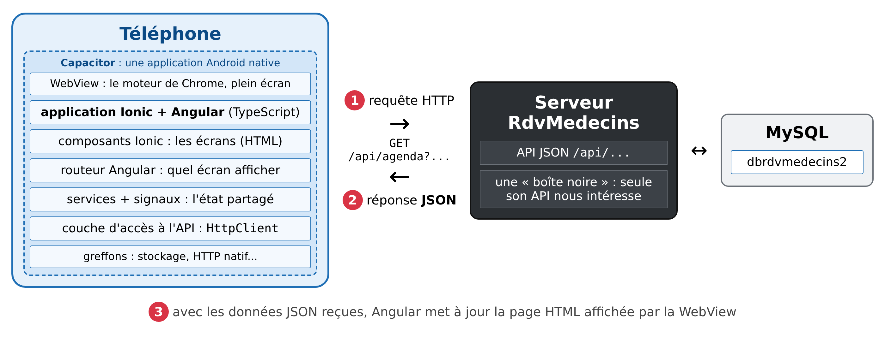

1. Introduction
Le PDF du document est ICI.
Les codes du document sont ICI.
Ce document est un produit de l'IA Claude d'Anthropic. Il fait suite au cours Introduction étape par étape au framework mobile Flutter, dont il reprend le plan, les exemples et l'étude de cas, et au cours Introduction étape par étape au framework Angular, dont il reprend les outils :
- dans le cours [Flutter], l'application est une application mobile, écrite en [Dart], dont le moteur de [Flutter] dessine lui-même chaque pixel ;
- dans le cours [Angular], l'application est une application web : du HTML, du CSS et du [TypeScript], exécutés par un navigateur ;
- dans ce cours, l'application est l'une ET l'autre : une application web, écrite avec [Angular] et les composants du framework [Ionic], que l'outil [Capacitor] emballe dans une application [Android], installée sur le téléphone. Le même code, sans rien changer, tourne aussi dans un navigateur.
Le serveur, lui, ne change pas : c'est le serveur JSON [RdvMedecins] des cours précédents, écrit avec [NestJS]. Et les écrans de l'application sont ceux que les lecteurs des autres cours connaissent déjà (connexion avec captcha, agenda d'un médecin, fenêtre de réservation, espace du patient, gestion des médecins et des clients, création d'un compte, français et anglais), adaptés à un écran de téléphone.
Le document suit la même progression que ses prédécesseurs : d'abord de nombreux petits exemples, chacun centré sur une notion d'[Ionic] ou d'[Angular], puis une étude de cas complète, le client [Ionic] de l'application [RdvMedecins], dont tous les fichiers sont commentés. Les 25 exemples portent les mêmes numéros, et affichent les mêmes écrans, que ceux du cours [Flutter] (et des cours [React] et [Vue.js]) : le lecteur qui connaît l'un de ces frameworks retrouvera les mêmes exemples, écrits à la manière d'[Ionic] et d'[Angular]. Chaque exemple se termine d'ailleurs par une comparaison avec [Flutter].
Les bases du langage [TypeScript] et du framework [Angular] sont supposées connues : elles sont présentées dans les cours Introduction au langage TypeScript par l'exemple et Introduction étape par étape au framework Angular. Les notions d'[Angular] utilisées (signaux, gabarits, injection de dépendances, routeur, formulaires réactifs...) sont cependant rappelées au fil des exemples, au moment où elles servent.
1.1. La place d'Ionic dans une application client / serveur
L'application a deux parties, qui ne se parlent que par des requêtes HTTP :

- 1 : l'application [Ionic], exécutée par le téléphone, envoie une requête HTTP au serveur, par exemple [GET /api/agenda?idMedecin=1&jour=2026-10-05] ;
- 2 : le serveur répond par des données JSON : l'agenda de ce médecin, ce jour-là. Il ne fabrique aucune page ;
- 3 : avec ces données, [Angular] met à jour l'écran du téléphone.
C'est exactement l'architecture des clients [Flutter], [React], [Vue.js] et [Angular] : seul change ce qui fabrique l'affichage. Et sur ce point, [Ionic] est à l'opposé de [Flutter]. [Flutter] est un moteur de dessin : il ne doit rien au navigateur, et dessine lui-même chaque pixel de l'écran. [Ionic], lui, ne dessine rien : c'est une bibliothèque de composants web (« Web Components ») : des éléments HTML nouveaux, [<ion-button>], [<ion-input>], [<ion-list>], [<ion-tabs>]..., fabriqués avec l'outil [Stencil] de l'équipe d'[Ionic], que n'importe quel navigateur sait afficher. Ces composants imitent les composants natifs du téléphone, dans deux « modes » : [md] ([Material Design], l'aspect d'[Android]) et [ios] (l'aspect de l'[iPhone]). Ce cours force le mode [md] partout, y compris dans le navigateur. Parce que ce sont de simples éléments HTML, les composants d'[Ionic] peuvent être utilisés avec [Angular], [React] ou [Vue.js] : ce cours les utilise avec [Angular] (le paquet [@ionic/angular]).
L'application est donc une application web ordinaire : une page HTML, une feuille de style, du code [JavaScript] compilé à partir du [TypeScript]. C'est [Capacitor] (de la même équipe qu'[Ionic]) qui en fait une application [Android] :
- [Capacitor] fabrique un projet [Android] natif, dont l'unique écran est une WebView : le moteur du navigateur [Chrome] du téléphone, plein écran, sans barre d'adresse. L'application web compilée est copiée dans ce projet, et la WebView la charge au démarrage. Pour l'utilisateur, c'est une application comme une autre : une icône, un écran de démarrage, le bouton Retour d'[Android] ;
- le code [JavaScript] accède aux fonctions du téléphone (stockage, appareil photo, notifications, géolocalisation...) par des greffons (« plugins ») de [Capacitor], qui font le lien avec le code natif. Ce cours en utilise deux : [@capacitor/preferences] (un petit stockage clé / valeur sur l'appareil, exemple 20) et [CapacitorHttp] (des requêtes HTTP faites par le code natif d'[Android], exemples 22 à 25) ;
- le même code tourne dans un navigateur, où les greffons ont une version web (le stockage de [Capacitor] utilise alors le [localStorage] du navigateur). On développe donc dans [Chrome], à la taille d'un téléphone, avec ses outils de développement, et l'on passe sur [Android] pour vérifier.
Les trois étages de l'application, et ce qu'ils apportent :
- [Angular] : le framework de l'application. Il apporte les composants (une classe [TypeScript] et un gabarit HTML), les signaux (l'état, dont les changements mettent l'écran à jour), l'injection de dépendances (les services, l'état partagé), le routeur (une adresse par écran), les formulaires, le client HTTP, les « pipes » (la mise en forme). Le lecteur du cours [Flutter] reconnaîtra le principe : l'interface est une fonction de l'état. On ne modifie jamais l'écran : on change l'état, et [Angular] met à jour ce qui en dépend ;
- [Ionic] : les composants de l'interface, à l'aspect d'une application mobile (barres d'outils, listes, champs, boutons flottants, onglets, fenêtres d'alerte, calendrier...), et la navigation d'une application mobile : une pile de pages, animée comme sur [Android], que dépile le bouton Retour ;
- [Capacitor] : l'application [Android], et l'accès au téléphone.
Contrairement à [Flutter], il n'y a pas besoin de paquets supplémentaires pour le dialogue avec un serveur : [Angular] fournit le client HTTP, le routeur, les formulaires, l'injection de dépendances ; [JavaScript] fournit, avec l'objet [Intl], la mise en forme des dates et des nombres dans chaque langue ; la bibliothèque [RxJS], livrée avec [Angular], les flux de données asynchrones. Les traductions (exemple 21) sont faites par une petite classe écrite pour l'occasion, qui lit des dictionnaires JSON.
1.2. Les outils utilisés
Les exemples ont été écrits et testés avec les outils suivants (leur installation est décrite au chapitre suivant et en annexe) :
- [Node.js] 24 et son gestionnaire de paquets [npm] : [Angular CLI] 22 exige [Node.js] 22.22.3 (ou une version 22 plus récente), 24.15 ou plus, ou 26 et au-delà. [Node.js] sert aussi au serveur JSON ;
- [Angular CLI] 22.2 (la commande [ng]), [Angular] 22.2 et [TypeScript] 6.0 ;
- [Ionic] 9.0 (le paquet [@ionic/angular] 9.0.6) et ses icônes, [ionicons] 8.1 ;
- [Capacitor] 8.5 (les paquets [@capacitor/core], [@capacitor/android] et [@capacitor/cli]), et son greffon [@capacitor/preferences] 8.0 ;
- l'éditeur [Visual Studio Code] et ses extensions [Angular Language Service] et [Ionic] ;
- [Android Studio], pour le SDK [Android], son JDK et son gestionnaire d'émulateurs : un émulateur [Android] (un téléphone simulé sur l'ordinateur), ou un vrai téléphone [Android] relié à l'ordinateur ;
- le navigateur [Chrome], pour développer et pour déboguer l'application, sur l'ordinateur comme sur le téléphone ;
- le SGBD [MySQL] (ou [MariaDB]), par exemple celui de [Laragon] sous [Windows] : il est nécessaire au serveur JSON, à partir du chapitre qui le présente ;
- l'outil en ligne de commande [curl], qui affiche les réponses HTTP brutes.
Les paquets utilisés sont ceux des fichiers [package.json] des deux projets [Ionic], qui sont identiques : les paquets [@angular/...] 22.2, [@ionic/angular] 9.0, [ionicons] 8.1, [@capacitor/...] 8.5, [@capacitor/app] 8.1, [@capacitor/preferences] 8.0, [rxjs] 7.8, et, pour le développement seulement, [typescript] 6.0, [prettier] 3 (la mise en page du code) et [playwright] 1.56 (les copies d'écran).
1.3. Les copies d'écran
Les copies d'écran de ce document ont été fabriquées automatiquement, par des programmes qui utilisent la bibliothèque [Playwright] (dossiers [captures/] des deux projets [Ionic]). Le programme [captures/captures.mjs] pilote un navigateur [Chromium] (la version libre de [Chrome]) à la taille d'un téléphone [Android] : 412 x 892 points, à 2,625 pixels par point, soit des images de 1082 x 2342 pixels. Pour chaque exemple, il joue un « scénario » du dossier [captures/scenarios/] : il ouvre la page de l'exemple, la manipule comme le ferait un utilisateur (saisies, appuis sur les boutons), puis enregistre l'écran dans un fichier image.
Ce sont donc de vrais écrans de l'application, affichés par le moteur de [Chrome], celui-là même qu'utilise la WebView du téléphone ; il leur manque seulement la barre d'état du téléphone (heure, batterie) et le clavier virtuel. Le lecteur peut les refaire (l'application doit tourner, cf. ci-dessous) :
- ligne 1 : une seule fois : télécharge le navigateur [Chromium] dont se sert [Playwright] ;
- ligne 2 : refait toutes les copies d'écran, dans le dossier [captures/images/] ;
- ligne 3 : refait seulement celles des exemples 05 et 17.
Les copies d'écran des exemples 22 à 25 et de l'étude de cas demandent en plus que le serveur JSON tourne, en « mode test » du captcha (cf. le chapitre qui présente le serveur).
1.4. Les exemples
Les codes du document sont rangés dans trois dossiers :
Les exemples forment un seul projet [Ionic] : une page d'accueil, le menu des exemples, et une page par exemple, chacune dans son dossier de [src/app/] (l'exemple 01 présente le projet en détail) :
Les dossiers [node_modules/] (les paquets) et [android/] (le projet [Android]) ne sont pas fournis : le premier est rempli par [npm install], le second est fabriqué par [Capacitor]. Dans une console ouverte sur le dossier [exemples_ionic] (dans [VS Code] : menu Terminal / Nouveau terminal) :
- ligne 1 : une seule fois, pour tous les exemples : télécharge les paquets décrits par [package.json], dans le dossier [node_modules/] ;
- ligne 2 : lance [ng serve], le serveur de développement d'[Angular], à l'adresse [http://localhost:8100].
On ouvre cette adresse dans [Chrome] : la page d'accueil liste les 25 exemples, groupés par chapitre ; un appui sur un exemple l'ouvre, le bouton Retour de sa barre ramène au menu. On peut aussi aller directement à un exemple par son adresse : [http://localhost:8100/ex05] pour l'exemple 05. Pour voir l'application à la taille d'un téléphone, on ouvre les outils de développement (F12), puis la barre d'émulation des appareils (Ctrl+Maj+M). Tant que [ng serve] tourne, chaque modification d'un fichier est compilée et appliquée aussitôt dans le navigateur ; Ctrl+C l'arrête.
Sur [Android], l'application des exemples s'installe en une fois, avec ses 25 exemples et son menu :
- ligne 1 : une seule fois : fabrique le dossier [android/], un projet [Android Studio] complet ;
- ligne 2 : compile l'application web, dans le dossier [dist/exemples_ionic/browser/] ;
- ligne 3 : la copie dans le projet [Android] ;
- ligne 4 : construit l'application [Android], l'installe sur un émulateur démarré ou sur un téléphone branché (la commande demande lequel, s'il y en a plusieurs), et la lance.
Les lignes 2 à 4 sont à refaire après chaque modification du code. L'exemple 01 montre aussi comment avoir, sur le téléphone, le rechargement automatique de [ng serve].
Les exemples 22 à 25 interrogent le serveur JSON [RdvMedecins] : il faudra alors l'avoir installé et lancé, comme expliqué au chapitre qui lui est consacré. Dans le navigateur, le serveur de développement leur transmet les requêtes [/api] (fichier [proxy.conf.json]) ; sur l'émulateur, ils joignent le serveur à l'adresse [http://10.0.2.2:8080] (cf. exemple 22).
1.5. Contenu du document
Chapitre | Contenu | Exemples |
Premiers pas avec Ionic | un projet Ionic (Angular + Capacitor), les composants d'Ionic, l'état (signal, computed, effect), les gabarits (@if, @for), les événements, tous les types de champs, un réducteur, la validation, les formulaires réactifs, la mise en forme (Intl, pipes) | 01 à 09 |
Les composants | entrées (input), sorties (output, model), composition (projection de contenu, ng-template), cycle de vie, injection de dépendances (services, inject), directives et animations, fenêtre de confirmation (AlertController) | 10 à 16 |
Le routage | le routeur d'Angular et ion-router-outlet : routes, paramètres, coquille avec ion-tabs, chargement différé, page 404, gardes | 17 et 18 |
L'asynchrone et l'état partagé | Promise, Observable (RxJS), minuteries, anti-rebond, réponses périmées, pipe async, toSignal, resource, un service à signaux, @capacitor/preferences, thème sombre | 19 et 20 |
Internationalisation | une application en français et en anglais | 21 |
Le serveur RdvMedecins, une boîte noire | installation du serveur JSON, son API, exemples curl | - |
Dialoguer avec le serveur | HttpClient, le proxy de développement, l'adresse du serveur, CapacitorHttp sur Android, le cookie httpOnly du jeton (gardé par le navigateur ou par Android), une couche d'accès à l'API, les erreurs du serveur | 22 à 25 |
Étude de cas | le client Ionic de l'application RdvMedecins | - |
Déploiement | le client web compilé, servi par le serveur JSON ; l'application Android | - |
Chaque exemple est présenté avec son code complet, commenté ligne par ligne, et des copies d'écran de son exécution. Les codes sont eux-mêmes abondamment commentés : leurs commentaires font partie du cours.